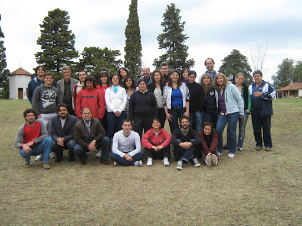

Red Internacional de Investigación Pedagógica en Educación Física Escolar (REIIPEFE)
Nacida formalmente en 2010 en la localidad de Ascochinga (Córdoba, Argentina), la inquietud tuvo origen en charlas entre colegas de Brasil y Argentina cuatro años antes. En 2008 la Universidades Federal de Espírito Santo (Brasil) convocó de la mano de Valter Bracht al I Seminario Internacional de Investigación Pedagógica en Educación Física, en el que el colectivo Praxis comenzó a participar. Nuestra participación como soci@s fundador@s nos ha permitido ampliar la producción científica y académica, el trabajo en proyectos de desarrollo social, los vínculos con nuevas instituciones y personas, grupos latinoamericanos, intercambios de docentes y estudiantes, entre otros múltiples beneficios.
